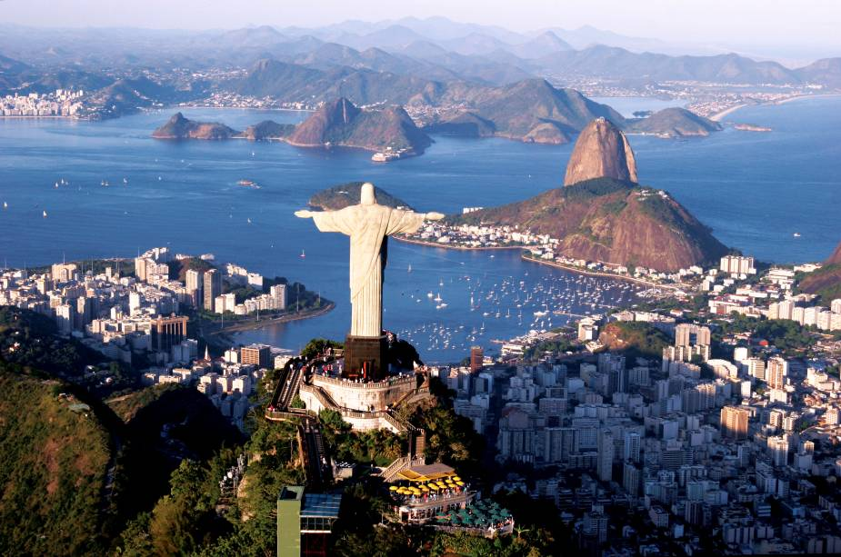

Rio de Janeiro - RJ

- O que fazer: Visite o Cristo Redentor, um dos maiores cartões-postais do Brasil. Aproveite as praias como Copacabana, Ipanema e Leblon. Não deixe de conhecer o Pão de Açúcar e a Lapa, um bairro famoso pela vida noturna.
- Dica: Se você gosta de cultura, o Museu do Amanhã e o Museu de Arte do Rio são ótimas opções.
Florianópolis - SC

- O que fazer: Florianópolis é conhecida pelas suas belas praias, como Joaquina, Barra da Lagoa e Campeche. Também é famosa pelo seu clima descontraído e pelas opções de ecoturismo.
- Dica: Se você ama natureza, visite a Ilha do Campeche ou o Parque Estadual de Jericoacoara.
Salvador - BA

- O que fazer: O que fazer: Conheça o Pelourinho, com sua arquitetura colonial, igrejas e museus. O Elevador Lacerda oferece uma vista maravilhosa da cidade e da Baía de Todos os Santos. Aproveite também para curtir a culinária baiana, com pratos como acarajé e moqueca.
- Dica: Visite o Mercado Modelo para comprar artesanato local.